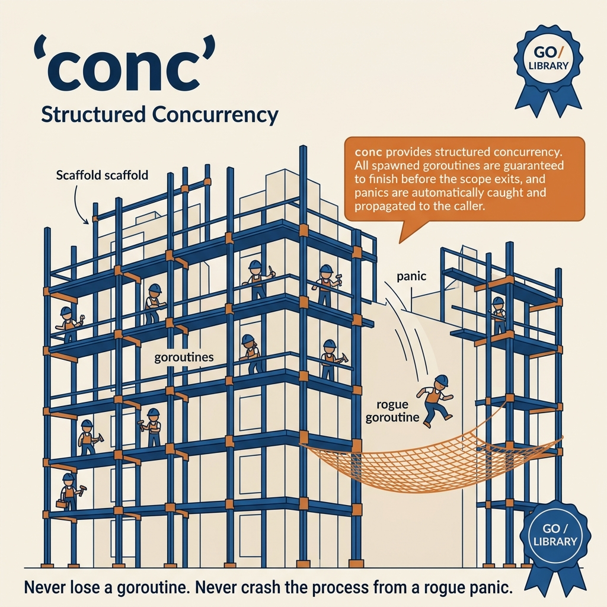

Structured Concurrency (Lập trình song song có cấu trúc) là triết lý lập trình quy định rằng các luồng xử lý song song (Goroutines) phải có vòng đời rõ ràng, lồng ghép chặt chẽ trong phạm vi của hàm gọi chúng. Nó đảm bảo nguyên tắc: Một hàm chỉ hoàn thành khi toàn bộ các luồng con do nó spawn ra đã kết thúc hoàn toàn.
Trong Go chuẩn mực, việc gọi go func() tạo ra một Goroutine "mồ côi" không có ranh giới cấu trúc. Nếu xảy ra lỗi hoặc treo, luồng này sẽ bị rò rỉ (Goroutine Leak) ngầm. Conc (phát triển bởi Sourcegraph) là thư viện tối tân giúp đưa Structured Concurrency vào Go, đi kèm hỗ trợ Generics Type-safe và Panic-recovery tự động.

Tại sao Conc vượt trội hơn sync.WaitGroup & errgroup?
Mặc dù sync.WaitGroup và golang.org/x/sync/errgroup rất phổ biến, chúng vẫn để lộ những kẽ hở lớn về độ an toàn mã nguồn trong môi trường tải lớn:
Một goroutine chạy ngầm bị Panic trong raw WaitGroup hoặc errgroup sẽ kéo đổ toàn bộ ứng dụng Server. Conc tự động bắt Panic, bảo vệ Server và ném lại Panic an toàn tại luồng chủ ở hàm Wait().
errgroup không trả về dữ liệu. Bạn phải tự dùng channel hoặc mutex để gom kết quả thô interface{}. Conc ResultPool[T] dùng generics trả thẳng về mảng kiểu T an toàn.
errgroup chỉ trả về lỗi đầu tiên phát hiện và bỏ qua toàn bộ lỗi của các luồng khác. Conc ErrorPool thu thập đầy đủ tất cả các lỗi xảy ra trong các luồng con.
Conc cung cấp module iter cho phép song song hoá vòng lặp mảng ForEach và Map cực kỳ ngắn gọn, bảo toàn thứ tự kết quả mà không cần viết tay hàng chục dòng code channel phức tạp.
So sánh tính năng: Conc vs Errgroup vs Raw Go
| Tính năng | Sourcegraph Conc | golang.org/x/sync/errgroup | Raw Goroutine + WaitGroup |
|---|---|---|---|
| Đồng bộ có cấu trúc | ✅ Bắt buộc (Structured) | ✅ Có hỗ trợ | ❌ Phải tự quản lý tay dễ rò rỉ |
| Bảo vệ Panic | ✅ Có (Re-raise tại Wait) | ❌ Không (Crashes Process) | ❌ Không (Crashes Process) |
| Thu gom lỗi | ✅ Toàn bộ lỗi (Multi-error) | ⚠️ Chỉ lỗi đầu tiên | ❌ Phải tự code gom lỗi |
| Kiểu dữ liệu đầu ra | ✅ Generics Type-Safe []T |
❌ Không hỗ trợ | ❌ Không hỗ trợ |
Sơ đồ hoạt động của iter.Map
Khi xử lý mảng song song, fan-out/fan-in thô sơ bằng channel sẽ làm xáo trộn thứ tự các phần tử. conc/iter.Map khắc phục điều này bằng cách cấp phát trước mảng kết quả có cùng chiều dài, phân chia index độc lập cho các workers chèn ghi song song, loại bỏ hoàn toàn chi phí tranh chấp lock.
Lợi ích bảo toàn thứ tự: Việc pre-allocate mảng đầu ra giúp triệt tiêu thao tác append tranh chấp tài nguyên bộ nhớ Heap. Bạn luôn nhận về mảng kết quả sắp xếp đúng 100% thứ tự của mảng đầu vào mà không tốn bất kỳ chi phí CPU nào để sort lại dữ liệu.
Ứng dụng của bạn có các nhu cầu song song đa dạng: 1. Bắn thông báo marketing ra bên ngoài (Fire-and-forget, lỗi thì bỏ qua). 2. Gọi nhiều dịch vụ kiểm tra tín dụng (Nếu bất kỳ dịch vụ nào lỗi thì dừng lại thu thập lỗi). 3. Song song tính toán bình phương của tập dữ liệu trả về mảng kết quả.
package main import ( "fmt" "time" "github.com/sourcegraph/conc/pool" ) func main() { // ━━━━━━━━━━━━━━━━━━━━━━━━━━━━━━━━━━━━━━━━━ // 1. pool.Pool — fire-and-forget cơ bản // Tự động bắt panic, giới hạn tối đa 3 workers chạy đồng thời // ━━━━━━━━━━━━━━━━━━━━━━━━━━━━━━━━━━━━━━━━━ fmt.Println("=== 1. pool.Pool ===") p := pool.New().WithMaxGoroutines(3) for i := 0; i < 5; i++ { taskID := i p.Go(func() { time.Sleep(50 * time.Millisecond) fmt.Printf(" Task %d hoàn tất\n", taskID) }) } p.Wait() // Đảm bảo toàn bộ tác vụ con kết thúc // ━━━━━━━━━━━━━━━━━━━━━━━━━━━━━━━━━━━━━━━━━ // 2. pool.ErrorPool — Thu gom đa lỗi // Trả về tập lỗi tổng hợp (multi-error) cực kỳ chi tiết // ━━━━━━━━━━━━━━━━━━━━━━━━━━━━━━━━━━━━━━━━━ fmt.Println("\n=== 2. pool.ErrorPool ===") ep := pool.New().WithErrors().WithMaxGoroutines(3) for i := 0; i < 5; i++ { taskID := i ep.Go(func() error { if taskID%2 == 0 { return fmt.Errorf("tác vụ %d thất bại", taskID) } return nil }) } if err := ep.Wait(); err != nil { fmt.Printf(" ❌ Các lỗi thu thập được: \n%v\n", err) } // ━━━━━━━━━━━━━━━━━━━━━━━━━━━━━━━━━━━━━━━━━ // 3. pool.ResultPool[T] — Generics Type-Safe // Tự động trả về []T cực sạch, không tốn ép kiểu interface{} // ━━━━━━━━━━━━━━━━━━━━━━━━━━━━━━━━━━━━━━━━━ fmt.Println("\n=== 3. pool.ResultPool[T] ===") rp := pool.NewWithResults[string]().WithMaxGoroutines(3) for i := 0; i < 5; i++ { taskID := i rp.Go(func() string { return fmt.Sprintf("Kết quả mẫu-%d", taskID) }) } results := rp.Wait() // Trả thẳng về []string for _, r := range results { fmt.Printf(" 👉 %s\n", r) } }
Note & Conclusion: Phân loại Pool rõ ràng giúp bạn chọn đúng công cụ tối giản hoá logic code. Dùng ResultPool[T] giúp triệt tiêu hoàn toàn rủi ro ép kiểu thất bại tại Runtime, nâng cao đáng kể độ tin cậy của mã nguồn.
Bạn có một danh sách chứa 1,000 thực thể khách hàng. Bạn cần: 1. Gửi email xác thực hàng loạt tới từng người (Side-effects, không trả về dữ liệu). 2. Chuyển đổi định dạng danh sách User thành danh sách hiển thị dạng String chuẩn (Data transformation, bảo toàn thứ tự).
Nếu tự viết bằng kênh channel truyền dữ liệu thủ công, bạn sẽ tốn khoảng 50 dòng code kèm rủi ro nghẽn luồng cao. conc/iter giải quyết bài toán này chỉ với 3 dòng code cực kỳ thanh lịch.
package main import ( "fmt" "strings" "time" "github.com/sourcegraph/conc/iter" ) type Customer struct { ID int Name string Email string } func main() { customers := []Customer{ {ID: 1, Name: "Anh Tùng", Email: "tung@m-tp.vn"}, {ID: 2, Name: "Chị Linh", Email: "linh@example.com"}, {ID: 3, Name: "Anh Bách", Email: "bach@tech.com"}, } // ━━━━━━━━━━━━━━━━━━━━━━━━━━━━━━━━━━━━━━━━━ // 1. iter.ForEach: Xử lý song song có hiệu ứng phụ (Side-effects) // Mặc định sử dụng tối đa số lượng CPU hiện có (runtime.NumCPU()) // ━━━━━━━━━━━━━━━━━━━━━━━━━━━━━━━━━━━━━━━━━ fmt.Println("=== 1. iter.ForEach ===") iter.ForEach(customers, func(c *Customer) { time.Sleep(50 * time.Millisecond) // Giả lập I/O fmt.Printf(" 📧 Gửi email thành công tới %s (%s)\n", c.Name, c.Email) }) // ━━━━━━━━━━━━━━━━━━━━━━━━━━━━━━━━━━━━━━━━━ // 2. iter.Map: Chuyển đổi dữ liệu và BẢO TOÀN THỨ TỰ // Trả thẳng về mảng định kiểu mới tinh tế // ━━━━━━━━━━━━━━━━━━━━━━━━━━━━━━━━━━━━━━━━━ fmt.Println("\n=== 2. iter.Map ===") displayNames := iter.Map(customers, func(c *Customer) string { time.Sleep(30 * time.Millisecond) return fmt.Sprintf("MEMBER-%d: %s [%s]", c.ID, strings.ToUpper(c.Name), c.Email) }) for i, name := range displayNames { fmt.Printf(" [%d] %s\n", i, name) } fmt.Println("👉 Thứ tự đầu ra hoàn toàn trùng khớp thứ tự đầu vào ban đầu!") }
Nhận xét: Callbacks của iter.ForEach và iter.Map nhận tham số là một Con trỏ (Pointer) trỏ trực tiếp vào phần tử mảng (*Customer). Giúp bạn dễ dàng chỉnh sửa giá trị trực tiếp trên mảng gốc nếu cần thiết mà không phải sao chép dữ liệu tốn RAM.
Khi phát triển các luồng xử lý song song ngầm, thảm họa tồi tệ nhất là lỗi **Panic** từ thư viện bên ngoài (ví dụ: con trỏ nil, chỉ số mảng vượt biên...).
Nếu dùng errgroup.Group hoặc sync.WaitGroup, lỗi panic này sẽ lập tức làm sập chết toàn bộ Server (Process Crash).
Bạn bắt buộc phải tự viết khối recover() thủ công cho từng Goroutine con một cách vô cùng mệt mỏi và dễ sơ sót.
Yêu cầu: Bể chứa song song phải tự động bắt toàn bộ Panic của các luồng con, đóng gói thông tin vết lỗi (Stack Trace) và truyền về luồng chủ an toàn để xử lý cô lập.
package main import ( "fmt" "github.com/sourcegraph/conc/pool" ) func main() { fmt.Println("=== Khởi động Pool an toàn Panic ===") // Hàm ẩn dụ bọc ngoài để thu giữ Panic ném ra từ Conc Wait() func() { defer func() { if r := recover(); r != nil { fmt.Printf("✅ [SYSTEM PROTECTED] Phát hiện và bắt gọn Panic: %v\n", r) } }() p := pool.New().WithMaxGoroutines(2) p.Go(func() { fmt.Println(" Task 1: Vận hành ổn định.") }) p.Go(func() { // Tác vụ con bị sập do lỗi con trỏ nil ảo var ptr *int *ptr = 99 // 💥 Sinh Panic tại đây! }) p.Go(func() { fmt.Println(" Task 3: Vận hành ổn định.") }) // ⚠️ Wait() sẽ tự động ném lại (Re-raise) lỗi Panic đã được gom từ luồng con p.Wait() }() fmt.Println("🎉 Hệ thống vẫn tiếp tục vận hành an toàn sau sự cố!") fmt.Println(" (Nếu dùng errgroup, cả Server của bạn đã bị sập tắt hoàn toàn)") }
Triết lý đằng sau: Go đề cao tính tường minh, nên stdlib để mặc cho sập để lập trình viên sửa lỗi tận gốc. Tuy nhiên trong môi trường sản xuất chịu tải doanh nghiệp, việc sập toàn bộ Server chỉ vì một luồng con bị lỗi là điều không thể chấp nhận được. Conc giải quyết hoàn hảo sự cân bằng này: an toàn ở luồng con, tường minh ở luồng chủ!
Trang tổng quan (Dashboard) của bạn cần tổng hợp thông tin cá nhân khách hàng bằng cách gọi 3 APIs dịch vụ độc lập: API Thông tin cơ bản (Profile) → API Ví tiền (Wallet) → API Lịch sử đơn hàng (Orders).
Yêu cầu thiết kế: 1. Tối ưu thời gian phản hồi bằng cách gọi song song cả 3 APIs cùng lúc. 2. Khống chế cứng thời gian phản hồi (Timeout) toàn cục. 3. Thu gom toàn bộ lỗi nếu có (ví dụ: API Ví bị lỗi nhưng API Orders vẫn OK, ta cần báo chính xác API nào hỏng). 4. An toàn dữ liệu kiểu tĩnh (Type-safe) trả về không cần ép kiểu interface.
package main import ( "context" "fmt" "time" "github.com/sourcegraph/conc/pool" ) type APIResponse struct { Source string Data string } // fetchProfile mô phỏng gọi API chi tiết user func fetchProfile(ctx context.Context) (APIResponse, error) { time.Sleep(80 * time.Millisecond) return APIResponse{Source: "Profile", Data: "User: Tung M-TP, Level: VIP"}, nil } // fetchWallet mô phỏng gọi API số dư ví func fetchWallet(ctx context.Context) (APIResponse, error) { time.Sleep(120 * time.Millisecond) return APIResponse{Source: "Wallet", Data: "Balance: 99,000,000 VND"}, nil } // fetchOrders mô phỏng gọi API lịch sử đơn hàng bị lỗi func fetchOrders(ctx context.Context) (APIResponse, error) { time.Sleep(60 * time.Millisecond) return APIResponse{}, fmt.Errorf("API đơn hàng bảo trì đột xuất") } func main() { ctx, cancel := context.WithTimeout(context.Background(), 200*time.Millisecond) defer cancel() // ━━━━━━━━━━━━━━━━━━━━━━━━━━━━━━━━━━━━━━━━━ // pool.NewWithResults[T]().WithErrors(): // Cú pháp tối thượng kết hợp song song gộp lỗi và trả về dữ liệu an toàn kiểu tĩnh // ━━━━━━━━━━━━━━━━━━━━━━━━━━━━━━━━━━━━━━━━━ p := pool.NewWithResults[APIResponse]().WithErrors() // Gửi song song cả 3 APIs p.Go(func() (APIResponse, error) { return fetchProfile(ctx) }) p.Go(func() (APIResponse, error) { return fetchWallet(ctx) }) p.Go(func() (APIResponse, error) { return fetchOrders(ctx) }) // Thu gom kết quả và lỗi đồng thời results, err := p.Wait() if err != nil { fmt.Printf("⚠️ [MULTI-ERROR CAPTURED] Có lỗi phát sinh trong luồng song song:\n%v\n\n", err) } fmt.Println("📋 Kết quả API thu gom thành công:") for _, res := range results { if res.Source != "" { fmt.Printf(" 👉 Nguồn: %-8s | Dữ liệu: %s\n", res.Source, res.Data) } } }
Kết luận cấp cao: Sự kết hợp tuyệt mỹ giữa Generics định kiểu APIResponse và gom đa lỗi WithErrors() của Conc mang lại trải nghiệm viết code song song chuẩn chỉ chưa từng có trong Go. Không ép kiểu interface{}, không lock mutex, không lọt lỗi. Vô cùng hoàn hảo!
Mặc định, pool.New() sẽ không giới hạn số lượng Goroutines con. Nếu bạn chọc vòng lặp 100,000 dòng để gửi request, hệ thống sẽ bùng nổ 100,000 Goroutines lập tức gây nghẽn RAM!
Luôn khai báo giới hạn qua WithMaxGoroutines(limit) khi xử lý danh sách không kiểm soát hoặc I/O để bảo vệ dòng tải.
| STT | Lỗi phổ biến | Hệ quả vận hành | Biện pháp khắc phục chuẩn chỉnh |
|---|---|---|---|
| 1 | Thay đổi biến dùng chung (Shared State) trong iter.ForEach không bảo vệ |
Đổ vỡ dữ liệu ngầm (Silent Data Race) do hàng chục Goroutine cùng ghi đè lên bộ nhớ cùng lúc | Sử dụng sync.Mutex bảo vệ đoạn code ghi, hoặc chuyển sang dùng iter.Map trả kết quả cô lập |
| 2 | Không bắt lỗi (Recover) tại hàm gọi Wait() | Hệ thống sập toàn diện do Panic của luồng con ném ngược lại luồng chính không có chốt chặn bọc ngoài | Luôn bọc hàm có nguy cơ Panic ở luồng chủ bằng defer recover() an toàn |
| 3 | Thao tác xử lý trong vòng lặp iter.Map quá nhẹ (Light Tasks) |
Latency tăng lên do chi phí điều phối goroutines lớn hơn chi phí tính toán thực tế của task | Chỉ dùng song song hoá mảng khi tác vụ có dính tới I/O (DB, HTTP) hoặc tính toán thuật toán phức tạp |
Cảnh giác với rò rỉ Context: Dù Conc quản lý Goroutines rất tốt, nó không tự động huỷ bỏ (Cancel) các tác vụ con nếu Context đã bị Timeout. Hãy chủ động truyền ctx sâu vào từng API call bên trong các tác vụ con để giải phóng kết nối mạng kịp thời.
Tóm tắt cốt lõi: conc là thư viện chuẩn mực tương lai giúp hiện thực hoá Structured Concurrency trong Go một cách an toàn và tinh tế. Nắm chắc 3 quy tắc: (1) Luôn chốt chặn WithMaxGoroutines, (2) Dùng ResultPool[T] thay interface{}, (3) Bọc kỹ Wait() đề phòng Re-raised Panics!